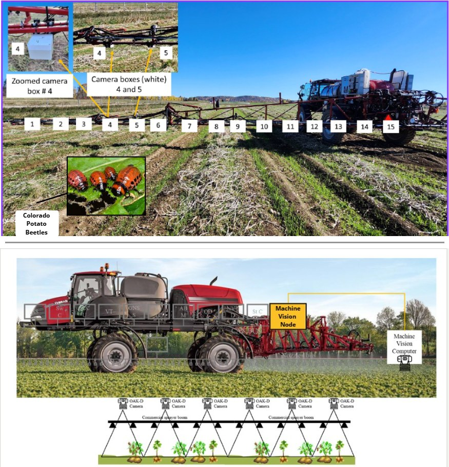
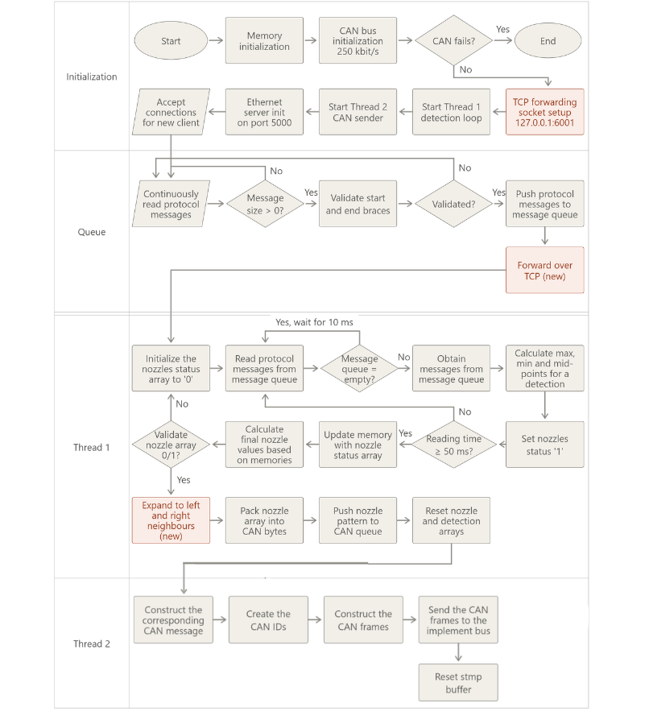

See & Spray on a CASE IH commercial sprayer
Mounted and commissioned a camera-based spot-spraying system on a CASE IH commercial boom sprayer: cameras, industrial computers, CAN modules and rate-controller hardware across a 60-nozzle boom.
Full-system ownership: took charge of the complete See & Spray experiment, from mounting and wiring the hardware to commissioning the machine vision and rate-control chain, running the field trials and troubleshooting on site.
System architecture

Machine vision computing rack
The vision side runs on Neousys Nuvo-9160GC industrial PCs. Each computer takes four HDMI-to-USB capture cards: every card receives the HDMI feed from one camera and passes it to the computer over USB, so one computer handles up to four cameras and eight computers cover up to 32 cameras across the boom. All HDMI cables enter the rack through split cable glands.
Each IPC accepts 8–48 V and draws about 280 W. The rack is fed from the sprayer's 12 V supply through a 12 → 24 V step-up converter, cooled by blower fans, and networked through a 16-port router that links the computers to the Machine Vision Node.

Hardware used · IPC rack
| Component | Details |
|---|---|
| Industrial computer | Neousys Nuvo-9160GC, 8–48 V input, ~280 W |
| Step-up converter | 12 V → 24 V |
| IPC rack | Houses the computers on the sprayer |
| Frame grabbers | HDMI-to-USB capture cards, 4 per computer |
| Data cables | USB-C to USB |
| Blower fans | Rack cooling |
| Router | 16-port, links the computers to the MVN |
Code workflow
